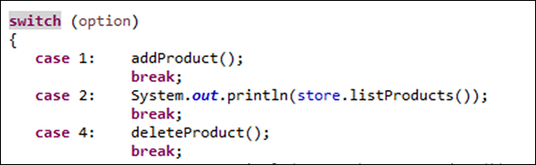
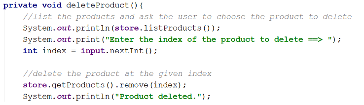
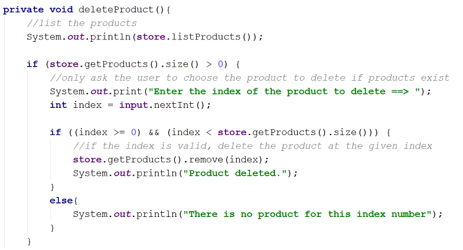
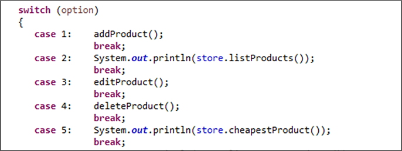
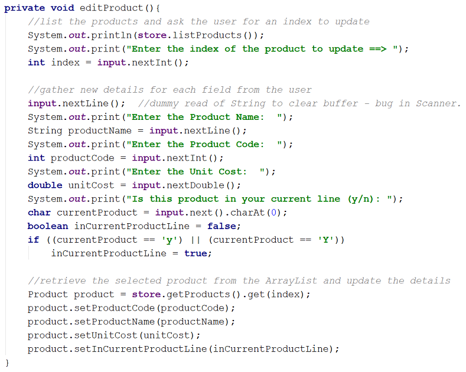

Objectives
CRUD · ShopV4.0 · DVDLibraryV2.0
Developing Shop V4.0
In this practical, you will create a new project called ShopV4.0 in IntelliJ. You will add the Driver, Store and Product classes (linked below) to this project and amend the code so that it presents the user with the following simple menu for adding, listing, updating and deleting products (see Figure 1).

Starting ShopV4.0
Create a new project called ShopV4.0.
Copy the following classes into the project:
Familiarise yourself with these classes by reviewing the code.
In the Driver class, make the following changes to display the updated menu:

Also in the Driver class, update the switch statement that processes the menu options to be:
switch (option){
case 1: addProduct();
break;
case 2: System.out.println(store.listProducts());
break;
case 5: System.out.println(store.cheapestProduct());
break;
case 6: System.out.println(store.listCurrentProducts());
break;
case 7: System.out.println(store.averageProductPrice());
break;
case 8: System.out.print("Enter the price barrier: ");
double price = input.nextDouble();
System.out.println(store.listProductsAboveAPrice(price));
break;
default: System.out.println("Invalid option entered: " + option);
break;
}Run the project.
Test options 1 and 2 to ensure you can add and list products.
Test options 5-8 to make sure they are working as expected.
Test options 3 and 4; they should do nothing and we will add this code in the subsequent steps.
Developing Shop V4.0
Continue working with ShopV4.0 in IntelliJ. You will add the code to delete a product, using menu option 4.
Store Class - getting ready for deleting
In the Store class, add an accessor method for the ArrayList of Products i.e.:
public ArrayList<Product> getProducts()
{
return products;
}Menu Item 4: Deleting a product
In the Driver class, make the following changes to implement case 4 (deleting a product):


Run the project (as a Java Application).
Add a product using option 1.
Test option 4 and try to delete the product you just added.
Did it work?
Now try to delete a product that doesn't exist e.g. enter an index of 6.
What happened? Did your program crash?
Menu Item 4: Adding error checking
In the Driver class, make the following changes to implement error checking:

Run the project and test these three scenarios:
No products exist...try deleting a product. The message "No products" should be displayed.
Create two products...try deleting a product at index 6. A message similar to "There is no product for this index number" should be displayed.
With the two products created...try deleting a product at index 1. The product is deleted.
Developing Shop V4.0
Continue working with ShopV4.0 in IntelliJ. You will add the code to update a product, using menu option 3.
Menu Item 3: Updating a product
In the Driver class, make the following changes to implement case 3 (updating a product):


Run the project.
Add a product using option 1.
Test option 3 - try to update the product you just added.
Did it work?
Now try to update a product that doesn't exist e.g. enter an index of 6.
What happened? Did your program crash?
Menu Item 3: Adding error checking
In the Driver class, make the following changes to implement error checking:

Run the project and test these three scenarios:
No products exist...try updating a product. The message "No products" should be displayed.
Create two products...try updating a product at index 6. A message similar to "There is no product for this index number" should be displayed.
With the two products created...try updating a product at index 1. The product should be updated.
Save and close this project.
Menu Driven DVD Specification (Phase 1)
In the previous practical, we worked on a new project called DVDLibraryV1.0. This app presented the user with a simple menu for adding and listing DVD titles. To refresh your memory on this project, please read the information below.
DVD class
The DVD class contained one instance field title, an empty default constructor and a getter and setter for the title field.
We also wrote a second constructor that took in the title as a parameter and updated the instance field, title. Finally, we wrote a toString method that formatted the object state to a user-friendly string.
Library class
The Library class contained one instance field called dvds that held an ArrayList of DVDs. The default constructor instantiated this ArrayList.
We wrote a method add() that accpeted a DVD object as a parameter. This method added the passed DVD object to the dvds ArrayList.
We also wrote a listDVDs() method that returned a String comprising the index number and the title of each DVD in the dvds ArrayList. If there were no dvds in the ArrayList, the String "No DVDs" was returned.
Driver class
The Driver class contained an instance field called library that is of type Library.
A global Scanner object was created that could be used by all methods in the class.
The default constructor instantiated the library field and the Scanner object.
We wrote a private method called addDVD() that had a void return type. This method read the title of the DVD from the user and added it (as a DVD object) to the ArrayList in the Library class.
We wrote a private method mainMenu() that had an int return type. This method displayed the name of the menu and the menu options (see Figure 1). This method read the menu option that the user entered and returned it.

We wrote a private method run() that had a void return type. This method controlled the menu options i.e. it called the appropriate method when the user selected a menu option.
Finally, we wrote a main method that created an instance of itself (i.e. the Driver class) and called the run method over this instance (see the code below).
Solution for DVD1.0
If you didn't complete DVD Phase 1, the solution is here.
If you did complete it, open your DVD V1.0 code in IntelliJ.
Run and Test
Run the DVD Phase 1 project.
Test the code by adding a few DVD and listing them. Try listing the DVDs when no DVDs have been entered (you can do this by restarting the app and listing without adding).
Menu Driven DVD Specification (Phase 2)
In this practical, you will create a new project in IntelliJ and copy in the code from DVDLibraryV1.0. You will then extend the code to allow the user to update and delete DVDs.
Create a new project called DVDLibraryV2.0 and copy the src java files from DVDLibraryV1.0 to the src folder in your new project, DVDLibraryV2.0.
NOTE: a copy of the completed DVDLibraryV1.0 is available here.
Update a DVD
In your Driver class:
add a third option to the menu: 3) Update a DVD.
in the switch statement, add a call to a new private method called updateDVD().
create an updateDVD() method that has no return type. This method should:
if DVDs exist in the ArrayList, list the DVDs and ask the user which one they would like to edit.
if the user types in a valid index, ask the user to enter a new title for the DVD.
retrieve the DVD at the specified index and update the title using the title mutator.
In your Library class, add an accessor for the dvs ArrayList:
public ArrayList<DVD> getDVDs()
{
return dvds;
}Run your code and test this code for the following three scenarios:
No DVDs exist...try updating a DVD. The message "No DVDs" should be displayed.
Create two DVDs...try updating a DVD at index 6. A message similar to "There is no DVD for this index number" should be displayed.
With the two DVDs created...try updating a DVD at index 1. The DVD should be updated.
Delete a DVD
In your driver class:
add a fourth option to the menu: 4) Delete a DVD.
in the switch statement, add a call to the deleteDVD() method.
create an deleteDVD() method that has no return type. This method should:
if DVDs exist in the ArrayList, list the DVDs and ask the user which one they would like to delete.
if the user types in a valid index, delete the DVD at that index.
Run your code and test this code for the following three scenarios:
No DVDs exist...try deleting a DVD. The message "No DVDs" should be displayed.
Create two DVDs...try deleting a DVD at index 6. A message similar to "There is no DVD for this index number" should be displayed.
With the two DVDs created...try deleting a DVD at index 1. The DVD should be updated.
Save and close your project.
Solutions
The solution to the ShopV4.0 exercise is here.
The solution to DVD phase 1 is here.
The solution to DVD phase 2 is here.
The code from the debug lecture is here